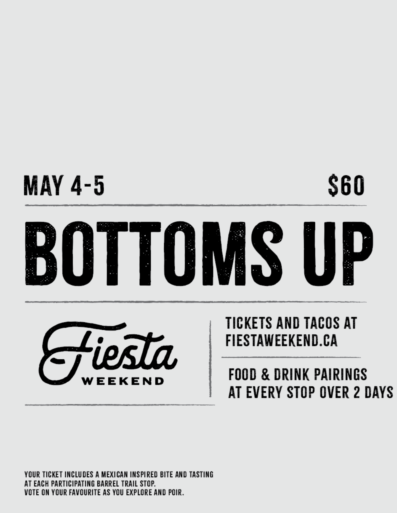
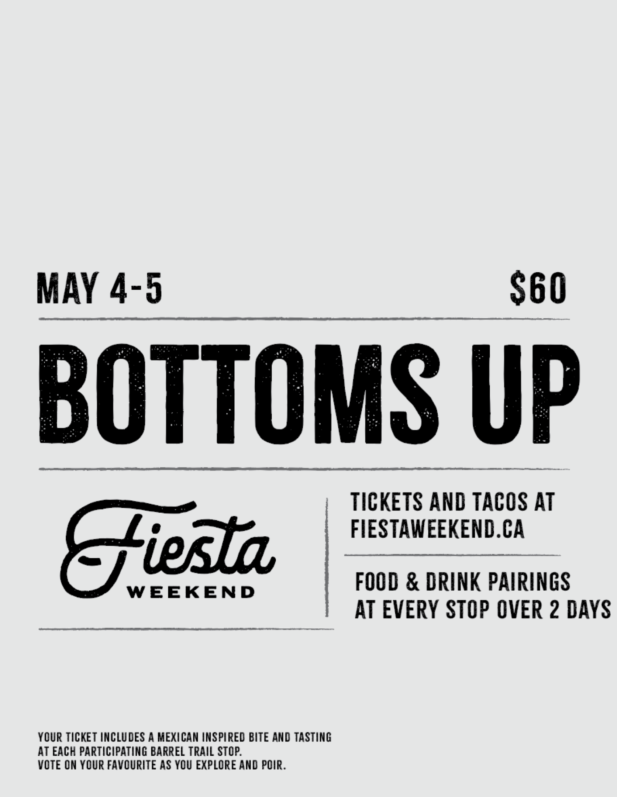
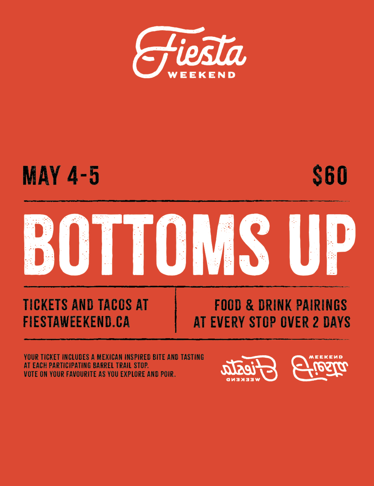
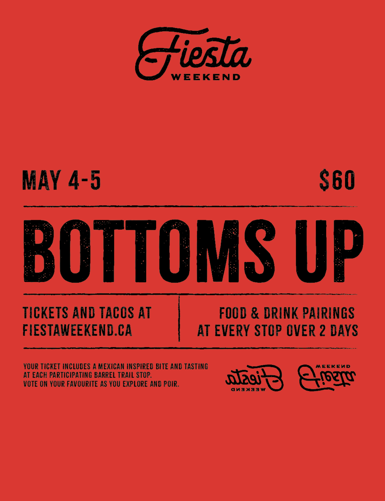
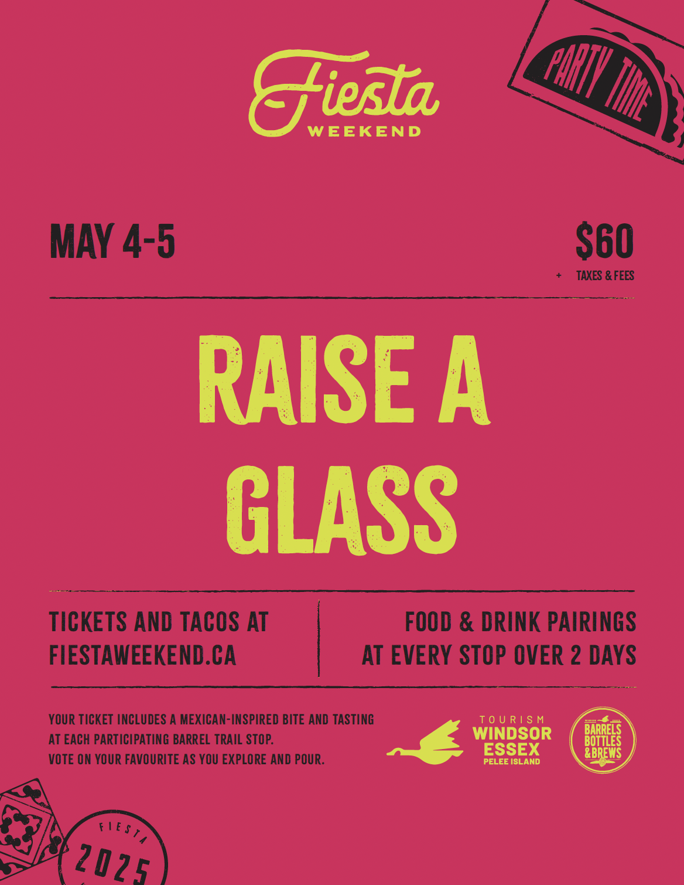
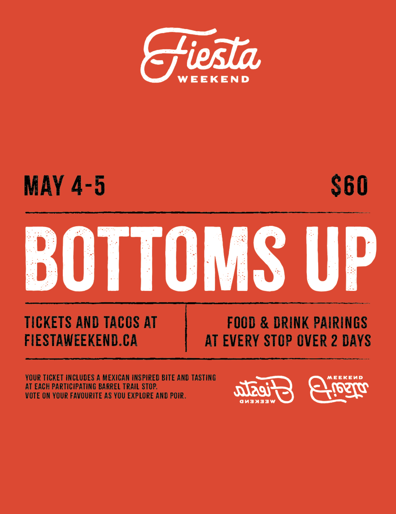
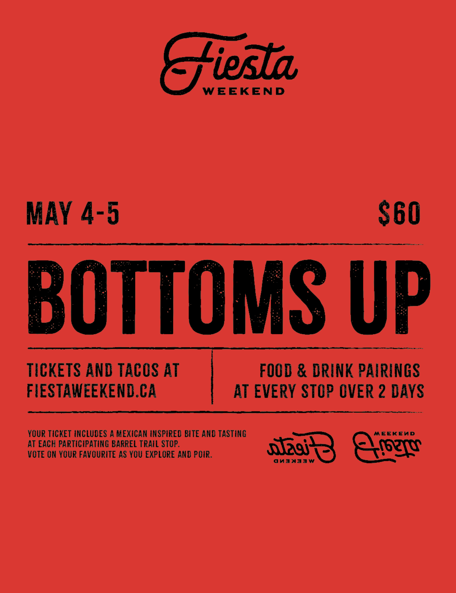
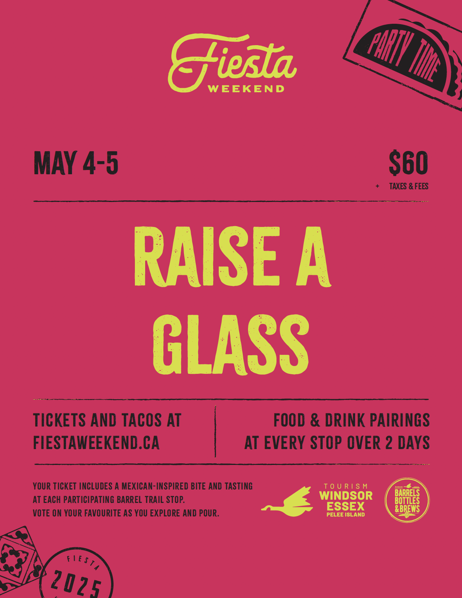

Jarritos x Fiesta Weekend
Ageny & Team
Agency: Tango Creative Group
Client: Tourism Windsor Essex Pelee Island
Role: Graphic Design and Copywriting
Supervision/Support: Marcello Fontana and Luc Sauve
Year: April 2025
Phase 1: The Rebrand
Every Cinco de Mayo weekend, Tourism Windsor Essex Pelee Island (TWEPI) hosts Fiesta Weekend, a bar crawl across Windsor's bars and breweries. As a design intern at Tango Creative Group, I was given the opportunity to redesign the visual identity system they'd been using to promote the event for nearly a decade.

Former branding for Fiesta Weekend
Process
The visual brand system for Fiesta Weekend needed to be colorful, lively, and reflective of real Mexican Heritage. The typography and brand system is inspired by old poster signage found in Mexico and typography-based alcohol labels. Explorations below explored copywriting, colour, and layout variations before settling on something that met every requirement for the rebrand.
 

 





The Design Solution
Copywriting slogans include "Raise Your Glass," "Sip Happens," and "Bottoms Up" (copywriting was ideated by me, then refined collaboratively at the agency). The layout and typography choices are complimented by a lively pink and green colour palette, custom stamps reflecting the Windsor area, and talevera tiles to bring back Mexican heritage. The Fiesta Weekend rebrand will rollout in Spring 2026.

Phase 2: Enter Jarritos
Setup
Cinco de Mayo celebrations are typically driven by alcohol. While Jarritos is widely loved, they're often treated as a secondary choice in these celebrations.
Fiesta Weekend, hosted by Tourism Windsor Essex Pelee Island, has been a staple of Windsor’s Cinco de Mayo celebrations for years, drawing crowds to the city’s bars and breweries.
The goal is to appeal to those who live a sober lifestyle and make Jarritos the drink of Cinco de Mayo through a buzz-generating experience that earns media attention.
Strategy
Jarritos partners with Fiesta Weekend to create a limited-edition experience.
Jarritos has developed 2 new flavours, Hibiscus and Yuzu, and now the city of Windsor is getting first access. Throughout the weekend, attendees can vote on which flavour becomes Jarritos' official Cinco de Mayo flavour. Every vote gives people an opportunity to win a special giveaway item. In addition, merch drops with exclusive items tap into scarcity to drive demand and cultural cachet.
Photography
Activation